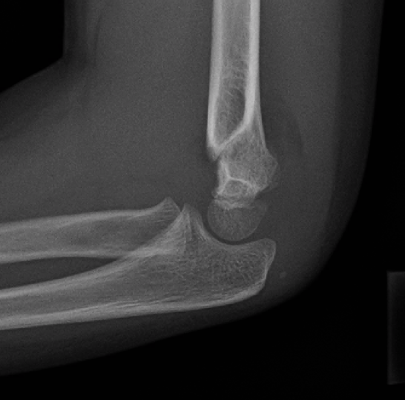

Ficha del catálogo
Fractura supracondílea de húmero en el niño
- Sistema
- Óseo
- Modalidad
- RX
- Región
- Codo
- Dificultad
- Intermedio
Es la fractura más frecuente del codo infantil y se produce por caída sobre la mano con el codo en extensión. Su relevancia radica en la proximidad de la arteria braquial y del nervio interóseo anterior, que pueden lesionarse. Muchas son mínimamente desplazadas y solo se detectan por signos indirectos.
Técnica
Proyecciones anteroposterior con el codo extendido y lateral estricta con el codo en noventa grados, esta última imprescindible para valorar las líneas de referencia.
Qué observar
- Signo de la almohadilla grasa posterior visible, que siempre es patológico
- Almohadilla grasa anterior desplazada en forma de vela de barco
- Línea humeral anterior que debe atravesar el tercio medio del cóndilo humeral
- Línea radiocapitelar que debe pasar por el centro del cóndilo en toda proyección
- Trazo transversal en la metáfisis distal del húmero por encima de los cóndilos
- Angulación posterior del fragmento distal en la proyección lateral
Hallazgos
Trazo supracondíleo con grado variable de angulación posterior, acompañado de derrame articular manifestado por desplazamiento de las almohadillas grasas.
Perlas
En un niño con dolor de codo tras una caída, la almohadilla grasa posterior visible equivale a derrame y por tanto a fractura hasta que se demuestre lo contrario, aunque no se identifique ningún trazo.
Diagnóstico diferencial
- Fractura del cóndilo lateral
- Trazo oblicuo epifisario lateral que exige mayor precisión de reducción.
- Luxación de codo
- Pérdida de la relación radiocubital con el húmero.
- Subluxación de la cabeza del radio
- Radiografía normal con mecanismo de tracción del antebrazo.
Simuladores
- Núcleos de osificación en distintas fases de aparición
- Fisis abiertas
- Superposición del olécranon
Por modalidad
- RX
- Diagnóstico y control postreducción
- TC
- Reservada para fracturas articulares complejas
- US
- Ocasionalmente útil para detectar derrame en el lactante
Protocolo
Anteroposterior y lateral estricta del codo, con proyección comparativa contralateral si existen dudas por la osificación incompleta.
Clasificación
Se ordenan según el grado de desplazamiento, desde la fractura no desplazada con corticales íntegras hasta la fractura completamente desplazada sin contacto entre fragmentos.
Errores frecuentes
- No trazar las líneas humeral anterior y radiocapitelar
- Ignorar la almohadilla grasa posterior por no ver trazo
- Obtener una lateral no estricta que invalida la valoración de las líneas

supracondilea codo pediatria almohadilla grasa linea radiocapitelar fractura urgencias